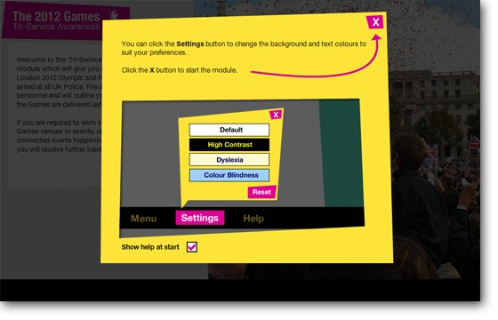

I proposed, researched and specified the accessibility settings that became the organisation's standard for national police training.
My role
Instructional Designer, then Producer.
Audience
Every police officer and member of police staff in the country, plus fire and ambulance colleagues. Several hundred thousand people, and none of them had a choice about doing the training.
What shipped
Four display modes, chosen by the user and remembered across the module. They became the baseline for every module the organisation produced afterwards.
A note on age
This is earlier work. Some work in this period needed SC clearance and is described here, not shown.
The challenge
Most accessibility work starts as a compliance obligation. This started with a question nobody had asked. What happens to the officer who can't comfortably read the screen, when the training is mandatory and their progress is tracked by name?
Some modules already had basic colour blindness settings. I extended those while working on training that needed SC clearance, then proposed a much fuller set for the London 2012 programme, built through 2011. It was the largest mandatory audience the organisation had ever addressed. I researched the approach myself and used the best public examples I could find, the BBC's accessibility work in particular, to win support for something nobody had budgeted for.
The audience had not chosen this training and could not skip it. They were completing it on locked-down public sector hardware between shifts, and digital confidence varied enormously. Many were learning online for the first time, having done the same training in a room with colleagues. When someone has no choice about using a service, every design decision decides whether they can take part at all.
What I built
Named display modes
The problem
A row of anonymous colour swatches asks people to work out which one is for them.
Chose
Four named modes that could be selected at any point: Default, High Contrast, Dyslexia and Colour Blindness. They were explained on first run and not buried in a menu.
Result
The organisation adopted them as its standard. A named mode tells people they were thought about.
Alongside the display settings, every video and animation was captioned and every script could be downloaded and printed. That last decision is the one I'm most pleased with. Someone who couldn't or wouldn't work on screen still had a complete route through the material.
Accessibility settings

The settings, rebuilt
This is a working reconstruction of the 2011 control. Switch between the four modes and the sample content changes. The Dyslexia mode adjusts letter spacing, word spacing and line height, and not only colour.
A reconstruction I built for this portfolio. The sample copy is indicative. The original was built in 2011, ran in Flash and has long been retired.
Explaining it before they needed it
A setting nobody finds might as well not exist. The modules opened with a short overlay showing where the control lived and what it did. A "show help at start" checkbox let anyone who didn't need it again turn it off. Telling people once that the option exists, without forcing it on them every time, decided whether the rest of it mattered.
First-run help
What it taught me
We went beyond the legal minimum on purpose, and the payoff wasn't compliance. Our richest and most specific feedback came from police staff with access needs, often people completing the training with a colleague sitting beside them and helping.
I didn't have the vocabulary then, but that is assisted digital. It's a real and common route through a public service, and not an edge case to tidy away. It has shaped how I've worked ever since. Designing for the person who needs the most support doesn't make the experience worse for everyone else, and it is usually the only way to find out what the service really asks of people.